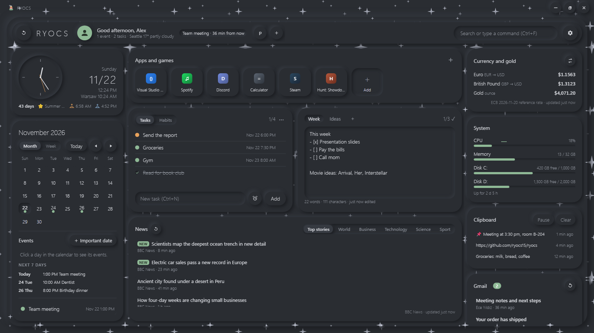
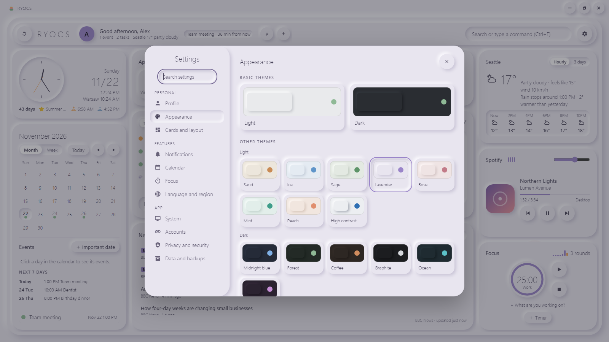
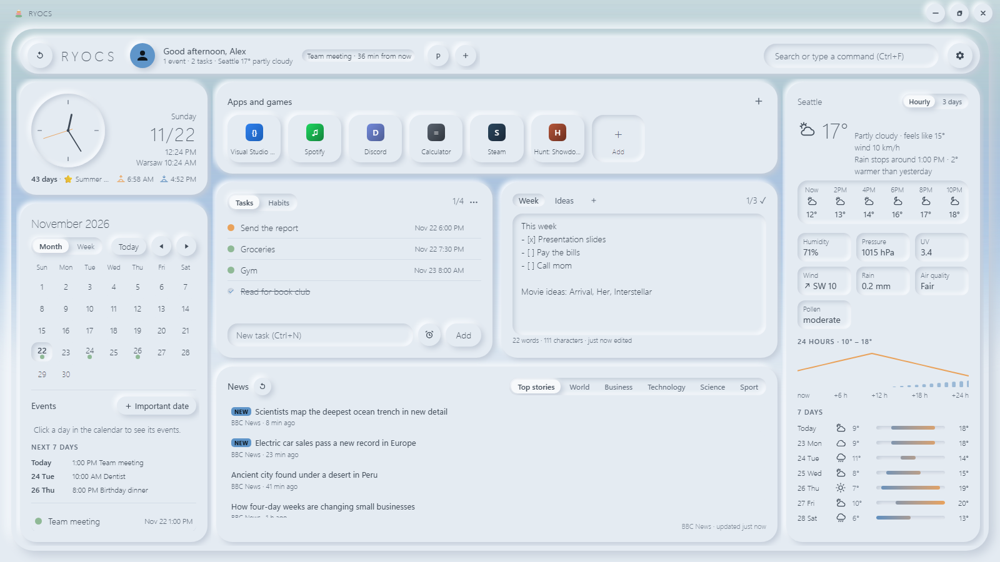
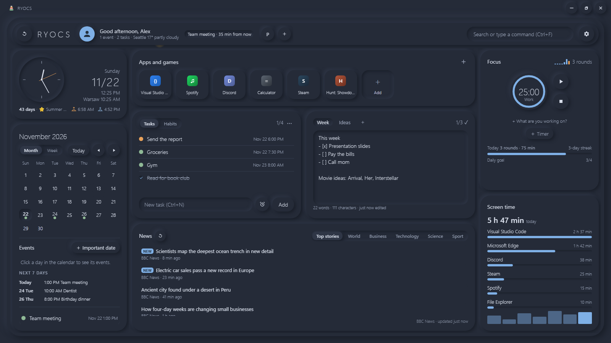

Your day, on one calm screen
RYOCS is a personal dashboard for Windows. Calendar, tasks, notes, weather, news, music and a focus timer, side by side, always one click away in the tray.
Free and open source (MIT) · Windows 10 and 11 · English and Turkish

Everything you check during the day
Each card can be moved, resized, hidden or tuned to taste. Turn on only what you need.
Clock
Ten dial styles, alarms, a second clock with 36 cities, sunrise and sunset, and countdowns.
Google Calendar
Month and week views; add, edit and delete events; join a meeting or open the place in Maps with one click; birthdays, important dates and your regional holidays.
Tasks and habits
Type “tomorrow 3 pm” at the end for a reminder; snooze, repeats on any days you like, priorities and habit streaks.
Notes
Quick notes with checklists, several notes in tabs, clearing checked items in one go, word count and full search.
Weather
Hourly and 7-day forecasts from Open-Meteo for up to five cities; when several places share a name, you pick the right one. When rain starts, the difference from yesterday, air quality and pollen; a morning alert and tomorrow's weather in the evening.
News
BBC News by category in English, Turkish sources in Turkish. Filter out keywords and sources, save stories for later.
Spotify
What is playing, podcasts too: skip, pause, seek, shuffle and repeat, change the volume, move playback to another device and peek at what is up next.
Focus timer
Pomodoro rounds with a daily goal and streak. Note what you are working on, see a weekly breakdown, and rename “Work” and “Break”. Do not disturb holds notifications until the round ends.
Gmail
The last 15 messages in your inbox, unread ones in bold. Click to open in the browser; right-click to mark as read or unread, or to archive. A notification for new mail.
Rates, system, clipboard
Currency and gold with a converter and alerts; CPU with its last minute, memory, every drive and battery; a private clipboard history with pins.
Screen time
How long you spent in each program today and over the last 7 days, with a daily limit per program. Off until you open it; the data stays on your PC.
Apps and games
Open apps, games and Steam or Epic shortcuts with one click, with recently and most opened ones at hand.
Search everything
Press Ctrl+F to find apps, tasks, notes, events and commands in one place.
Make it yours
16 themes, glass look, 11 animated backgrounds including a lava lamp (or a random one each time), accent colours, drag-to-resize layout and saved layouts.
Lives in the tray
Closing keeps it running in the tray. Open it from anywhere with a shortcut, and let it start with Windows if you like.
Private by design
Your data stays in your user folder. Optional PIN lock, daily backups and OneDrive sync.
Stays up to date
Shows a small notice with a download link when a new version is out. You start the install; nothing installs by itself.
A closer look
Light, dark and glass, in English or Turkish. Click a picture to enlarge it.






Get started
Installs for your user only, no admin rights needed.
Download
Get RYOCS-Setup.exe from the latest release and run it. If SmartScreen warns, choose More info → Run anyway.
Pick your cards
Weather, news and rates work right away. Open Settings → Cards and layout to switch cards on or off.
Connect accounts
For Google Calendar, Gmail or Spotify, follow the guided setup in Settings → Accounts or the step-by-step guide. It is free and your keys stay on your PC.